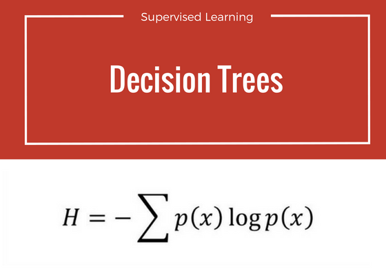
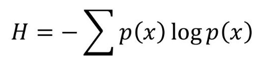
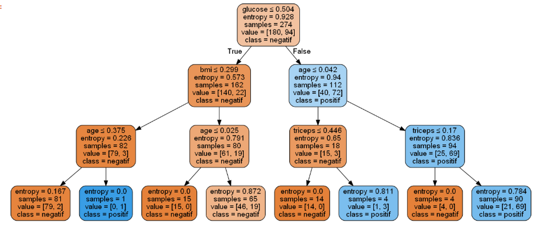

Implementasi Decision Tree¶
Pengertian Decision Tree¶

Decision tree adalah salah satu metode klasifikasi yang paling populer, karena mudah untuk diinterpretasi oleh manusia. Decision tree adalah model prediksi menggunakan struktur pohon atau struktur berhirarki.
Konsep decision tree :¶
Konsep dari pohon keputusan adalah mengubah data menjadi decision tree dan aturan-aturan keputusan. Manfaat utama dari penggunaan decision tree adalah kemampuannya untuk mem-break down proses pengambilan keputusan yang kompleks menjadi lebih simple, sehingga pengambil keputusan akan lebih menginterpretasikan solusi dari permasalahan.
Nama lain dari decision tree adalah CART (Classification and Regression Tree). Dimana metode ini merupakan gabungan dari dua jenis pohon, yaitu classification tree dan juga regression tree. Untuk memudahkan, berikut ilustrasi dari keduanya.

Entropi :¶
Entropi adalah sebuah besaran termodinamika yang berfungsi untuk mengukur energi dalam satuan temperatur yang tidak dapat digunakan untuk melakukan usaha.

memvisualisasikan decision tree harus menginstall :
pip install pydotplus
pip install graphviz
Langkah-langkah implementasi decision tree :¶
- Import library untuk kebutuhan implementasi
import pandas as pd from sklearn.tree import DecisionTreeClassifier from sklearn.model_selection import train_test_split from sklearn import metrics import numpy as np import pandas as pd import matplotlib.pyplot as plt from sklearn.tree import export_graphviz from sklearn.externals.six import StringIO from IPython.display import Image import pydotplus
- Import dataset untuk dibuat bahan dalam implementasi dan membuat class dari dataset yang sudah di masukkan.
#import dataset data = pd.read_csv("PimaIndians.csv") print (data.describe()) print (data.head()) print (data.tail()) print (data.describe()) data.rename(columns={'test': 'kelas'}, inplace=True) positif = data[data.kelas == "positif"] negatif = data[data.kelas == "negatif"] print (plt.show()) data.kelas = [1 if each == "positif" else 0 for each in data.kelas] y = data.kelas.values x_ = data.drop(["kelas"],axis=1) x = (x_ - np.min(x_))/(np.max(x_)-np.min(x_)).values from sklearn.model_selection import train_test_split x_train, x_test, y_train, y_test = train_test_split(x, y, test_size=0.3,random_state =1)
Outputnya :
pregnant glucose diastolic triceps insulin bmi \ count 392.000000 392.000000 392.000000 392.000000 392.000000 392.000000 mean 3.301020 122.627551 70.663265 29.145408 156.056122 33.086224 std 3.211424 30.860781 12.496092 10.516424 118.841690 7.027659 min 0.000000 56.000000 24.000000 7.000000 14.000000 18.200000 25% 1.000000 99.000000 62.000000 21.000000 76.750000 28.400000 50% 2.000000 119.000000 70.000000 29.000000 125.500000 33.200000 75% 5.000000 143.000000 78.000000 37.000000 190.000000 37.100000 max 17.000000 198.000000 110.000000 63.000000 846.000000 67.100000 diabetes age count 392.000000 392.000000 mean 0.523046 30.864796 std 0.345488 10.200777 min 0.085000 21.000000 25% 0.269750 23.000000 50% 0.449500 27.000000 75% 0.687000 36.000000 max 2.420000 81.000000 pregnant glucose diastolic triceps insulin bmi diabetes age \ 0 1 89 66 23 94 28.1 0.167 21 1 0 137 40 35 168 43.1 2.288 33 2 3 78 50 32 88 31.0 0.248 26 3 2 197 70 45 543 30.5 0.158 53 4 1 189 60 23 846 30.1 0.398 59 test 0 negatif 1 positif 2 positif 3 positif 4 positif pregnant glucose diastolic triceps insulin bmi diabetes age \ 387 0 181 88 44 510 43.3 0.222 26 388 1 128 88 39 110 36.5 1.057 37 389 2 88 58 26 16 28.4 0.766 22 390 10 101 76 48 180 32.9 0.171 63 391 5 121 72 23 112 26.2 0.245 30 test 387 positif 388 positif 389 negatif 390 negatif 391 negatif pregnant glucose diastolic triceps insulin bmi \ count 392.000000 392.000000 392.000000 392.000000 392.000000 392.000000 mean 3.301020 122.627551 70.663265 29.145408 156.056122 33.086224 std 3.211424 30.860781 12.496092 10.516424 118.841690 7.027659 min 0.000000 56.000000 24.000000 7.000000 14.000000 18.200000 25% 1.000000 99.000000 62.000000 21.000000 76.750000 28.400000 50% 2.000000 119.000000 70.000000 29.000000 125.500000 33.200000 75% 5.000000 143.000000 78.000000 37.000000 190.000000 37.100000 max 17.000000 198.000000 110.000000 63.000000 846.000000 67.100000 diabetes age count 392.000000 392.000000 mean 0.523046 30.864796 std 0.345488 10.200777 min 0.085000 21.000000 25% 0.269750 23.000000 50% 0.449500 27.000000 75% 0.687000 36.000000 max 2.420000 81.000000
- Memisahkan dataset dengan menggunakan function train_test_split dan menampilkan plotnya 3 tingkat :
# Create Decision Tree classifer object clf = DecisionTreeClassifier(criterion="entropy", max_depth=3) # Train Decision Tree Classifer clf.fit(x_train,y_train) #Predict the response for test dataset predicted_y = clf.predict(x_test)
- Menampilkan hasil akurasi :
# Model Accuracy, how often is the classifier correct? print("Akurasinya :",metrics.accuracy_score(y_test, predicted_y))
Outputnya :
Akurasinya : 0.7288135593220338
- Menampilkan decision tree :
feature_cols = ['pregnant','glucose','diastolic','triceps','insulin','bmi','diabetes', 'age'] dot_data = StringIO() export_graphviz(clf, out_file=dot_data, filled=True, rounded=True, special_characters=True, feature_names = feature_cols,class_names=['negatif','positif']) graph = pydotplus.graph_from_dot_data(dot_data.getvalue()) graph.write_png('PimaIndians.png') Image(graph.create_png())
Outputnya :
